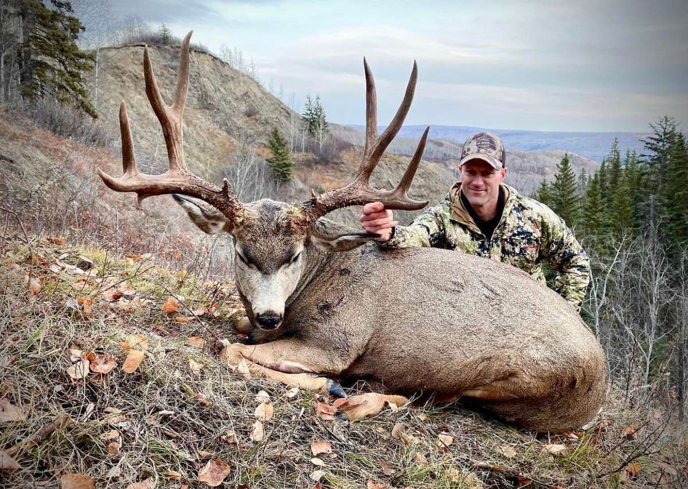

Every mountain has its king, and mule deer exhibit this well. Mule deer live at all elevation bands across the mountain with does and yearling living in the valley and lower benches, younger bucks inhabit the middle elevations, and the most mature bucks inhabit the high alpine areas at the top of the mountain. Mule deer are more adaptable than sheep or elk and inhabit different types of cover across the mountain, they are able to both graze and browse making them capable of living in thick forests year-round. Lime sheep mule deer migrate with the snow where bucks will follow snowline to the does for the November rut. Often time mule deer bucks in the alpine will be found even higher than the sheep to avoid predators.
Like sheep mule deer can be found in the mountains across the province from the southern border to the northern end of the front range. Despite this, distribution can be spotty in some areas especially north of the Red Deer River and south of the Willmore. South of the Red Deer River winters are less severe and predators less numerous leading to larger and higher numbers of deer. In the Willmore good habitat has led to stronger populations especially in the lower montane areas. In between these two areas deer are present but predator numbers, winterkill, and habitat degradation have resulted in marginal numbers and smaller trophies.
| Hotspot | Management Zones | Population Viability | Trophy Quality |
|---|---|---|---|
| Castle/Livingston | WMU 400, 402 | High | Very High |
| Kananaskis | WMU 404, 406, 408 | High | High |
| Grande Cache | WMU 440, 441, 446 | Moderate | Moderate |
Mule Deer hunting strategies can be broken down into 3 distinct times of year based on snow levels and rut timing.
Early season deer sees the bucks at the top of the mountain in their alpine summer homes. Bucks are grouped up by maturity and these bachelor groups can be found feeding in avalanche chutes and mountain meadows early in the morning and late in the evenings. Glassing from across the valley at peak activity times of day is the best way to locate bucks than make the long stalk to where the bucks bed for the heat of the day. This is often in isolated tree patches in the alpine.
Pre-rut mule deer hunting in late September through October is entirely dependent on weather. If warm weather persists the same tactics used in early season will work wonders. If cooler weather moves through with snowfall bucks will move to treeline and be almost impossible to find. The best way to hunt mature bucks in these conditions is to stalk through the trees slowly at treeline looking for tracks. Once a heavy track is found follow it slowly through the timber to the buck’s bed.
Once November roles around mule deer lose all sense of safety. Bucks are wherever the does are this time of year so spending time behind glass to locate does will pay off. Calling and rattling in bucks with antlers can work really well if bucks are in the timber looking for does. At this time of year there is no bad time of day to be on the mountain. Glassing, tracking, and calling can all produce and should be based on the conditions and snow depth.